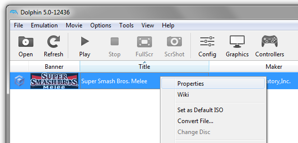
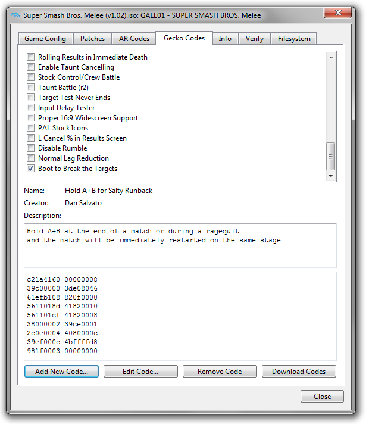
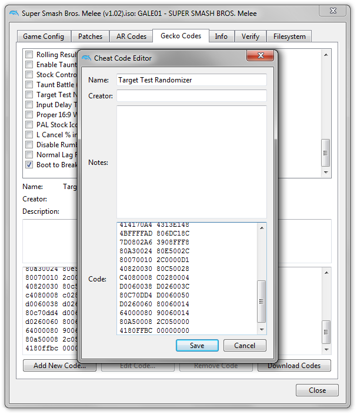

Back to Target Test Randomizer
1. Download and set up a copy of Dolphin Emulator.
2. Acquire a copy of Super Smash Bros. Melee v1.02 ISO.
3. Right click on the game and select Properties.

4. Click on Gecko Codes and click Add New Code...

5. In the editor, input a Name, paste the generated code into the Code field, then click Save.

6. Confirm that the code is checked in the list, then run the game.
7. Generate a new code every time you want a new stage, select Edit Code from the Gecko Codes tab, and replace the Code field with your new code.
8. For comments and suggestions, please join the Smash Stadium Discord channel and visit #randomizer.